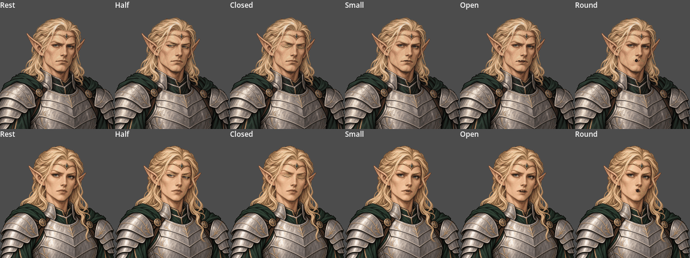
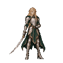
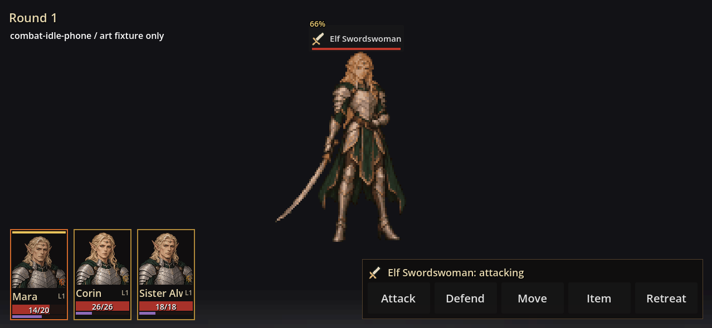

Two individual faces and one swordswoman. Pause each drawing, inspect the clean character, and compare the game-sized portraits. Story identities and roles remain unassigned.
96px card · full layers remain aligned on a 192px canvas.
Actual game component captures. Lighting remains separate from the character.


Shared native128 canvas, 32 colours and floor pivot. The sabre and all body parts remain inside every frame.

Disposable art fixture: the preview does not assign elf identities to the existing heroes or add an encounter.